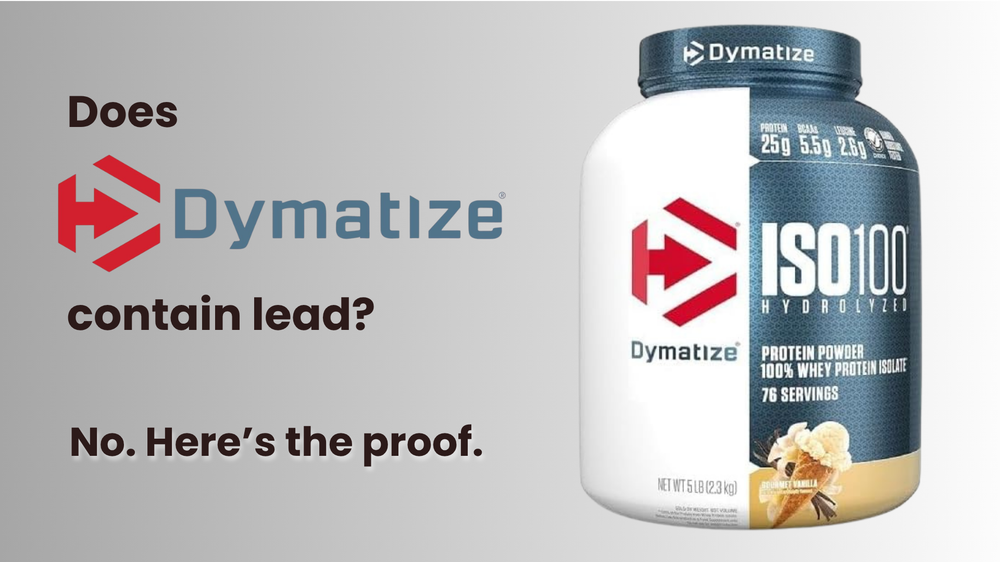

Dymatize ISO-100 holds a Clean Label Project Purity Award. The Super Mass Gainer was independently tested by Consumer Reports — #2 safest of 28 products.
Does Dymatize ISO-100 Have Lead? Safety Analysis & Testing Results (2026)
✅ Direct Answer: Does Dymatize ISO-100 Have Lead?
No detectable lead based on Clean Label Project certification — and the Dymatize brand has a strong Consumer Reports result to point to. Here's the accurate picture:
- Dymatize ISO-100: Clean Label Project Purity Award — non-detectable heavy metals. Not directly tested by Consumer Reports.
- Dymatize Super Mass Gainer: Consumer Reports #2 of 28 — 25% of CR's concern level for lead, safe for 4 servings/day. This is a separate product.
- What the CR result means for ISO-100: Same manufacturer, same quality standards — a strong positive signal, but not a direct transfer of verdict.
- CPL rating for ISO-100: ✅ Cleared — Consumer Reports direct verification pending.
Does Dymatize ISO-100 Have Lead?
Dymatize ISO-100 Hydrolyzed Whey Protein Isolate holds a Clean Label Project Purity Award — independent certification that screens for 400+ contaminants including lead, cadmium, arsenic, and mercury. Based on that certification, ISO-100 has non-detectable heavy metals.
Consumer Reports did not test Dymatize ISO-100 specifically. They did test a different Dymatize product — the Super Mass Gainer (Gourmet Vanilla, 333g serving) — which ranked #2 safest of 28 products at 25% of Consumer Reports' concern level for lead, cleared for up to 4 servings per day.
These are two separate products. The Super Mass Gainer result cannot be directly attributed to ISO-100, just as Premier Protein's powder result doesn't automatically apply to their RTD shakes. What it does tell you is that Dymatize's manufacturing standards are clearly strong — a brand that produces the second-safest product in a 28-product independent test is doing something right at the quality control level.
📊 What Consumer Reports Actually Found in Dymatize Testing
Product tested: Dymatize Super Mass Gainer, Gourmet Vanilla
Serving size: 333 grams (2.5 scoops)
CR ranking: #2 of 28 products tested
Lead level: 25% of Consumer Reports' concern level
Safe serving limit: 4 servings per day
CR guidance: "Better for daily consumption"
Note: This result applies to the Super Mass Gainer specifically. ISO-100 is a separate product (hydrolyzed whey isolate, ~25g protein per ~110 calorie serving) with its own Clean Label Project certification.
| Product | Lead Status | Testing Source | CPL Rating |
|---|---|---|---|
| Dymatize ISO-100 Hydrolyzed Whey | Non-detectable (Clean Label) | Clean Label Project Purity Award | ✅ Cleared |
| Dymatize Super Mass Gainer | 25% of CR concern level | Consumer Reports — #2 of 28 | ✅ Verified Safe |
| Optimum Nutrition Gold Standard | Below detection | Consumer Reports #5 + Clean Label | ✅ Dual Verified |
| Fairlife Core Power | Unknown | Not tested | ❓ Unverified |
| Naked Nutrition Vegan | 7.86 µg/serving | Consumer Reports #23 of 28 | ❌ Avoid |
How We Analyzed Dymatize ISO-100
Independent Data Sources: Consumer Reports Oct 2025 + Jan 2026 (Dymatize Super Mass Gainer tested) & Clean Label Project Purity Award (ISO-100)
Our 4-Step Safety Protocol:
- Source: We aggregate verified data from third-party labs (Consumer Reports, Clean Label Project, NSF).
- Benchmark: Contamination is measured against California Prop 65 safe harbor levels (0.5 µg/day lead).
- Categorize: Products are ranked as Safe, Limit Use, or Avoid based on toxic accumulation.
- Distinguish: We never transfer a test result from one product to another — each product is assessed on its own data.
✓ 100% Independent: Clean Protein List accepts no brand sponsorships or payments for rankings.
Analysis by US Military Veteran & Supplement Safety Researcher, Ray Rothwell.
✅ Dymatize: Strong Across Both Certification Standards
📋 Table of Contents
What Consumer Reports Found in Dymatize Testing
Consumer Reports' January 2026 expanded dataset included the Dymatize Super Mass Gainer (Gourmet Vanilla). At a 333g serving size (2.5 scoops), it ranked #2 safest of 28 products tested — 25% of Consumer Reports' concern level for lead, cleared for up to 4 servings per day.
To put that in context: 25% of Consumer Reports' concern level means if the concern threshold is set at 0.5 µg/day, the Super Mass Gainer contains approximately 0.125 µg per serving — well below the Prop 65 safe harbor even at multiple servings per day.
✅ What This Result Tells Us About the Brand
A brand that produces the second-safest product in a 28-product independent test — at 25% of the concern threshold — is operating with strong quality control. That doesn't allow CPL to apply the Super Mass Gainer result directly to ISO-100, but it does mean the manufacturer's standards are clearly robust. The Clean Label Purity Award on ISO-100 is corroborated, not contradicted, by the Super Mass Gainer result.
| CR Rank | Product | Lead Level | Daily Safe Limit |
|---|---|---|---|
| #1 | MuscleTech 100% Mass Gainer | Not detected | Unlimited |
| #2 | Dymatize Super Mass Gainer | 25% of concern level | 4 servings/day |
| #3 | Momentous Whey Isolate | Below detection | 3.3/day |
| #5 | Optimum Nutrition Gold Standard | Below detection | Unlimited |
| #12 | Orgain Organic Plant | 0.72 µg (143% over) | Limited |
| #23 | Naked Nutrition Vegan | 7.86 µg (1,572% over) | Avoid |
ISO-100 vs Super Mass Gainer: Which Is Right for You?
Dymatize makes two distinct products relevant to this discussion. Here's how to choose between them:
| ISO-100 Hydrolyzed Whey | Super Mass Gainer | |
|---|---|---|
| Safety verification | Clean Label Project Purity Award | Consumer Reports #2 of 28 |
| Lead status | Non-detectable (CLP) | 25% of CR concern level |
| Calories per serving | ~110 calories | ~1,280 calories (333g serving) |
| Protein per serving | ~25g | ~52g |
| Best for | Cutting, weight loss, lean muscle, post-workout | Bulking, hardgainers, high calorie needs |
| Price/serving | ~$1.25 | ~$3.00 |
💡 The Simple Rule
If you need lean protein for cutting, maintenance, or post-workout recovery — ISO-100. If you need to add mass and calories — Super Mass Gainer. Both are from the same manufacturer with demonstrated strong quality controls. Neither is a safety concern.
Why Dymatize Tests Clean
1. Hydrolyzed Whey Isolate Base (ISO-100)
ISO-100 uses hydrolyzed whey protein isolate — 99% pure protein. Hydrolysis pre-digests proteins into smaller peptides, adding an additional processing step that removes further impurities. The whey source means no soil-based lead absorption (unlike plant proteins).
Why Whey Isolate Is Inherently Lower Risk
- Dairy cattle don't pass heavy metals into milk at significant levels
- Ultra-filtration during isolate production removes contaminants alongside lactose
- Consumer Reports found all top-7 safest products were whey-based; 13 of the bottom 15 were plant-based
2. Glanbia Manufacturing Standards
Dymatize is owned by Glanbia, one of the world's largest nutrition companies. Glanbia operates FDA-registered, GMP-certified facilities with batch testing for contaminants. The Super Mass Gainer's #2 Consumer Reports ranking confirms these standards deliver results.
3. Clean Label Project Certification (ISO-100)
The Purity Award screens for 400+ contaminants including heavy metals, pesticides, plasticizers (BPA, phthalates), and mycotoxins. Fewer than 30% of tested protein brands pass it. ISO-100's certification was independently confirmed, not self-reported.
Dymatize Product Line Safety Overview
✅ ISO-100 Hydrolyzed Whey Isolate
Clean Label Project Purity Award certified. Non-detectable heavy metals. CPL's highest confidence product in the Dymatize lineup.
Certification: Clean Label Project — Purity Award | CPL Rating: Cleared
✅ Super Mass Gainer
Consumer Reports #2 of 28. 25% of concern level for lead. Safe for 4 servings/day. The directly tested product in the Dymatize lineup.
Certification: Consumer Reports Jan 2026 | CPL Rating: Verified Safe
✅ Elite 100% Whey / Elite Casein
Not independently tested. Same manufacturer and quality control infrastructure as ISO-100 and Super Mass Gainer. Likely safe based on brand track record — unverified.
Certification: None independent | CPL Rating: Likely safe, unverified
⚠️ Any Plant-Based Dymatize Products
Plant-based proteins carry inherently higher contamination risk regardless of brand. 93% of plant proteins tested by Consumer Reports exceeded safe lead limits. Would require independent testing before recommendation.
CPL Rating: Not recommended without specific testing
⚡ Quick Check: Is YOUR Protein Safe?
Tell us what you're using — we'll show you the safety data in 5 seconds:
Dymatize ISO-100 vs Other Safe Proteins
| Brand | Lead Status | Verification | Price/Serving | Best For |
|---|---|---|---|---|
| Dymatize ISO-100 | Non-detectable (CLP) | Clean Label Purity Award | $1.25 | Pure isolate, cutting, fast absorption |
| Dymatize Super Mass Gainer | 25% of CR concern level | Consumer Reports #2 | $3.00 | Bulking, high calorie needs |
| Optimum Nutrition Gold Standard | Below detection | CR #5 + Clean Label | $0.75 | Best value, dual-verified |
| Body Fortress Whey | Non-detectable | Clean Label Purity Award | $0.67 | Budget-first buyers |
| Momentous Whey Isolate | Below detection | CR #3 + NSF Sport | $2.75 | Athletes, drug-tested sports |
💰 The Value Question
ISO-100 at $1.25/serving is the right choice if you want a 99% pure hydrolyzed isolate with fast absorption and Clean Label certification. If you want the same heavy metal safety profile at lower cost, Optimum Nutrition Gold Standard ($0.75/serving) is dual-verified and widely available. The premium you pay for ISO-100 buys you the isolate purity and hydrolysis — not meaningfully better heavy metal safety.
Where to Buy Dymatize ISO-100
Buy Dymatize ISO-100 on Amazon →Frequently Asked Questions
Does Dymatize ISO-100 have lead?
No detectable lead based on Clean Label Project Purity Award certification. ISO-100 has not been directly tested by Consumer Reports. The Dymatize Super Mass Gainer — a separate product — ranked #2 safest of 28 CR-tested products at 25% of their concern level for lead. ISO-100's Clean Label certification and the brand's strong CR result on the mass gainer together make it one of the highest-confidence options available.
Which Dymatize product did Consumer Reports test?
The Dymatize Super Mass Gainer, Gourmet Vanilla flavor, 333g serving size (2.5 scoops). This is not the same product as ISO-100 Hydrolyzed Whey Isolate. They are different products with different formulations, calorie counts, and use cases. The Super Mass Gainer result (#2 of 28, 25% of concern level) reflects well on Dymatize's manufacturing quality but cannot be directly applied to ISO-100.
Is Dymatize ISO-100 safe for daily use?
Yes. Clean Label Project Purity Award confirms non-detectable heavy metals across lead, cadmium, arsenic, and mercury. There are no serving restrictions for ISO-100 based on the available certification data.
How does Dymatize ISO-100 compare to Optimum Nutrition Gold Standard?
Both are cleared for daily use with non-detectable or near-non-detectable lead. ON Gold Standard has stronger verification depth — Consumer Reports #5 plus Clean Label Project — while ISO-100 has Clean Label certification only (no direct Consumer Reports test). ON Gold Standard is also cheaper ($0.75 vs $1.25/serving). ISO-100's edge is in purity (99% hydrolyzed isolate vs ON's concentrate blend) and absorption speed — meaningful for athletes who want the fastest post-workout protein delivery.
Is Dymatize good for weight loss?
Yes — ISO-100 is one of the best options for cutting. 25g protein per serving at approximately 110 calories. Zero/minimal carbs and fat. Fast absorption from hydrolysis means no bloating. Clean Label certified so you're not adding heavy metal exposure during a calorie-restricted phase when your body is already under metabolic stress.
Does Dymatize ISO-100 have a Prop 65 warning?
No. Dymatize ISO-100 does not carry a California Prop 65 warning, consistent with its Clean Label Project non-detectable heavy metal certification. The absence of a Prop 65 warning aligns with and corroborates the certification data.
I was using Naked Nutrition or Huel — should I switch to Dymatize?
Yes, immediately. Naked Nutrition Vegan Mass Gainer ranked #23 of 28 with 7.86 µg lead (1,572% over safe limit). Huel Black ranked #22 with 6.44 µg (1,288% over). Dymatize ISO-100 (Clean Label non-detectable) or the Dymatize Super Mass Gainer (CR #2, 25% of concern level) are dramatically safer in every meaningful comparison. Stopping exposure is the priority — switching to Dymatize eliminates future accumulation from this source immediately.
The Bottom Line on Dymatize
🔎 Find Your Perfect Safe Protein
Take our 60-second quiz to get personalized recommendations based on your goals, budget, and dietary needs.
Find Your Safe Protein →Sources:
- Consumer Reports, "These 5 Protein Powders Had Low Levels of Lead," January 8, 2026 — Dymatize Super Mass Gainer, Gourmet Vanilla, tested at 25% of concern level, ranked #2 of 28 products.
- Consumer Reports, "Protein Powders and Shakes Contain High Levels of Lead," October 14, 2025 — initial 23-product study framework.
- Clean Label Project, Purity Award certification — Dymatize ISO-100 Hydrolyzed Whey Protein Isolate. Non-detectable heavy metals.
- California OEHHA, Proposition 65 Safe Harbor Levels — lead threshold 0.5 µg/day.
- Dymatize / Glanbia, product specifications and manufacturing documentation.
Last Updated: April 2026
Disclosure: This article contains affiliate links. If you buy through them, we may earn a commission at no extra cost to you. We only recommend products with verified independent safety data.